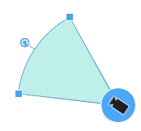

<!DOCTYPE html>
<html lang="en">
  <head>
    <meta charset="UTF-8" />
    <meta name="viewport" content="width=device-width, initial-scale=1.0" />
    <title>Leaflet Map with Marker</title>
    <!-- Include Leaflet CSS -->
    <link rel="stylesheet" href="modulesmap/leaflet.css" />
    <!-- Include Leaflet Control Geocoder CSS -->
    <link rel="stylesheet" href="modulesmap/control_geocoder.css" />
    <!-- Include Leaflet and Leaflet Control Geocoder scripts in the correct order -->
    <script src="modulesmap/leaflet.js"></script>
    <script src="modulesmap/control_geocoder.js"></script>
    <script src="qrc:///qtwebchannel/qwebchannel.js"></script>
    <style>
      #map {
        height: 1080px;
      }
      .custom-tooltip {
        background: black;
        color: white;
        border: none !important;
      }
      .leaflet-div-icon {
        background: none !important;
        border: none !important;
      }
    </style>
  </head>
  <body>
    <div id="map"></div>
    <script>
      var mapData = [];
      var map;
      var new_toolTip = "";
      var new_camera_name = "";
      var markerToDelete = undefined;

      function setMapData(data) {
        console.log("Map data: ", data);
        mapData = data;
        initializeMap();
      }

      var map; // declare map variable globally

      function setMapView(view) {
        var mid_point_map = 0;

        // Check if the map is already initialized
        if (!map) {
          map = L.map("map");
        }

        if (mapData.length > 0) {
          mid_point_map = Math.floor(mapData.length / 2);

          // Check if mid_point_map is within the bounds of the array
          if (mid_point_map >= 0 && mid_point_map < mapData.length) {
            // Logic to switch between terrain and satellite views
            if (view === "terrain") {
              map.setView(
                [mapData[mid_point_map][0], mapData[mid_point_map][1]],
                22
              );
              L.tileLayer(
                "https://{s}.tile.openstreetmap.org/{z}/{x}/{y}.png"
              ).addTo(map);
            } else if (view === "satellite") {
              map.setView(
                [mapData[mid_point_map][0], mapData[mid_point_map][1]],
                22
              );
              L.tileLayer(
                "https://mt1.google.com/vt/lyrs=s&x={x}&y={y}&z={z}"
              ).addTo(map);
            }

            addMarkers(mapData);
          } else {
            console.error("Mid-point index is out of bounds.");
          }
        } else {
          console.error("No map data available.");
          if (view === "terrain") {
            map.setView([0, 0], 22);
            L.tileLayer(
              "https://{s}.tile.openstreetmap.org/{z}/{x}/{y}.png"
            ).addTo(map);
          } else if (view === "satellite") {
            map.setView([0, 0], 22);
            L.tileLayer(
              "https://mt1.google.com/vt/lyrs=s&x={x}&y={y}&z={z}"
            ).addTo(map);
          }
        }
      }

      var customIcon = L.divIcon({
        className: "leaflet-div-icon",
        iconSize: [50, 50],
        html:
          '<div style="transform: rotate(0deg); display: flex; align-items: center; justify-content: center; width: 100%; height: 100%;">' +
          '' +
          "</div>",
      });

      var rotationAngle = 0;
      var markers = [];

      function initializeMap() {
        setMapView("terrain");
        // Create a web channel
        new QWebChannel(qt.webChannelTransport, function (channel) {
          window.markerModel = channel.objects.markerModel;
          // Add click event listener to the map to add a new marker on click
          map.on("click", function (e) {
            if (new_camera_name !== "") {
              addNewMarker(e.latlng.lat, e.latlng.lng);
              new_camera_name = "";
              new_toolTip = "";
            }
          });
        });
        // Add the Leaflet Control Geocoder
        L.Control.geocoder({
          position: "topright",
          placeholder: "Search location...",
          defaultMarkGeocode: false,
          geocoder: L.Control.Geocoder.nominatim(),
        })
          .on("markgeocode", function (e) {
            // Access the searched string from e.geocode.name
            var searchedString = e.geocode.name;

            // Use the searched string as needed
            console.log("Searched string:", searchedString);

            map.setView(e.geocode.center, 22);
            window.markerModel.updateSearched(searchedString);
          })
          .addTo(map);
      }

      function addMarkers(markersData) {
        for (var i = 0; i < markersData.length; i++) {
          addMarker(markersData[i]);
        }
      }

      function addNewMarker(lat, lng) {
        // Check if window.markerModel is defined
        if (
          window.markerModel &&
          typeof window.markerModel.addMarker === "function"
        ) {
          // Add a new marker with dummy data
          var newMarkerData = [lat, lng, 30, new_camera_name, new_toolTip];
          window.markerModel.addMarker(
            newMarkerData[0],
            newMarkerData[1],
            newMarkerData[2],
            newMarkerData[3],
            newMarkerData[4]
          );
          addMarker(newMarkerData);
        } else {
          console.error(
            "markerModel is not defined or does not have the addMarker method."
          );
        }
      }

      function addMarker(markerData) {
        customTooltip = L.tooltip({
          className: "custom-tooltip",
          direction: "right",
          opacity: 0.7,
        });

        var marker = L.marker([markerData[0], markerData[1]], {
          icon: customIcon,
          title: markerData[3],
        }).addTo(map);

        marker.bindTooltip(customTooltip).openTooltip();
        customTooltip.setContent("IP: " + markerData[4]);

        marker.setIcon(
          L.divIcon({
            className: "leaflet-div-icon",
            iconSize: [50, 50],
            html:
              '<div style="transform: rotate(' +
              markerData[2] +
              'deg); display: flex; align-items: center; justify-content: center; width: 100%; height: 100%;">' +
              '' +
              "</div>",
          })
        );

        marker.on("click", function (e) {
          rotationAngle = (rotationAngle + 30) % 360;
          e.target.setIcon(
            L.divIcon({
              className: "leaflet-div-icon",
              iconSize: [50, 50],
              html:
                '<div style="transform: rotate(' +
                rotationAngle +
                'deg); display: flex; align-items: center; justify-content: center; width: 100%; height: 100%;">' +
                '' +
                "</div>",
            })
          );
          window.markerModel.updateDelete(markerData[3]);
          window.markerModel.updateRotation(rotationAngle, markerData[3]);
          markerToDelete = marker;
        });
        markers.push(marker);
      }

      function updateTooltip(ipAddress, camera_name) {
        new_toolTip = ipAddress;
        new_camera_name = camera_name;
      }
      function deleteMarker(camera_name) {
        map.removeLayer(markerToDelete);
        markerToDelete = undefined;
        window.markerModel.deleteResponse(camera_name);
        for (var i = 0; i < mapData.length; i++) {
          if (mapData[i][3] === camera_name) {
            // Remove the marker data from the array
            mapData.splice(i, 1);

            // Remove the marker from the markers array
            markers.splice(i, 1);
            break;
          }
        }
      }
      function deleteMarkerOnCameraDelete(camera_name) {
        // Remove all markers with a matching title
        markers = markers.filter(function (marker) {
          if (marker.options.title === camera_name) {
            map.removeLayer(marker);
            return false; // Exclude the marker from the filtered array
          }
          return true; // Keep the marker in the filtered array
        });

        // Update mapData by filtering out entries with a matching title
        mapData = mapData.filter(function (data) {
          return data[3] !== camera_name;
        });

        // Reset markerToDelete
        markerToDelete = undefined;
      }
    </script>
  </body>
</html>
